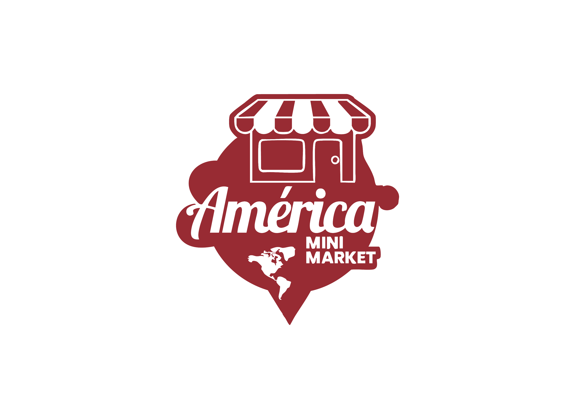

Ecoparque
Punta del Diablo


Ecoparque
Punta del Diablo
El Ecoparque de Punta del Diablo es un espacio que invita a recorrer y reconocer el entorno natural de la Costa rochense. A lo largo del camino, cada hito revela fragmentos del paisaje, la historia y la vida que habita este territorio: sus humedales, sus dunas, aves y especies nativas.
Esta plataforma acompaña el recorrido
A través de los códigos QR instalados en el parque, podrás acceder a contenidos digitales sobre flora, fauna y memorias locales, descubriendo cómo la comunidad y la naturaleza se entrelazan.

Ubicación del Ecoparque
Este proyecto fue desarrollado en contexto de la travesía Punta del Diablo 2025